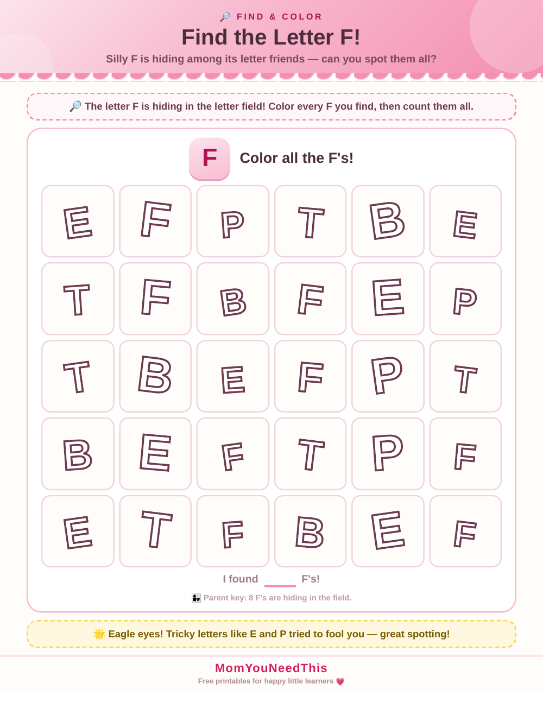

Letter F Worksheets Find and Color Letter F — Hunt for the Letter F, Then Color Every One
A letter hunt and coloring page in one! Your child will search for the letter F hiding among other letters, then color each one they find.
🐟 Fish
🐸 Frog
🌸 Flower
Quick Answer
These letter f worksheets are free printable find-and-color Letter F pages designed for toddlers and preschoolers ages 2-5. The worksheet includes hands-on exercises that build early learning skills through play. Download and print at home with no signup needed — no account required, just print and start learning.

🔎 Hunt, Then Color
Look carefully at each row and find every letter F. Color each one you find — try using a different color in every row!
⬇️ Download Free Printable 🖨️ Print🎁 Free printable for toddlers & preschoolers
👀 Look Closely
Some letters look tricky and similar! Take it slow and check each letter. Saying “F says fff” each time you find one reinforces the sound too.
🌈 Rainbow Challenge
For extra fun, color each F a different color of the rainbow. It turns a letter hunt into an art project.
🎨 Keep Exploring Free Letter Activities
More alphabet learning activities are added regularly for toddlers and preschoolers.
🎁 View All Free Resources🖨️ How to Use This Printable
Get started in minutes — everything here is free and made for busy parents.
- Download the printable. Tap the download button to save the free Free Find and Color Letter F file to your device.
- Print it out. Use any home printer and regular paper — cardstock works great for pages little hands will use again and again.
- Learn together. Sit with your child, follow the activity, and keep it playful. Short sessions work best.
- Explore more. Check the free printables linked below for your next activity.
🔤 Letter F Worksheets
These letter f worksheets help kids find, trace, and color the letter F. From 'fish' to 'frog' to 'flower,' F words are fun to say and easy to picture. Our letter f worksheets are free printables for ages 3 to 5.
The best letter f worksheets mix finding with coloring. Hunt for every F on the page, color them in, then say the F sound together: 'fff-fish.' That find-color-say loop builds letter recognition and phonics at once.
Tip: use letter f worksheets alongside real F objects — a fork, a feather, a family photo — to make the letter feel real.
See find-and-color Letter F sheet for more.
❓ Free Find and Color Letter F FAQs
Is this Free Find and Color Letter F printable free?
Yes — every printable on MomYouNeedThis is 100% free to download and print. No signup, no payment, just tap the download button.
How do I use this alphabet printable?
Print the page and work through it together: name the letter, make its sound, and complete the activity. Short, playful sessions work better than long lessons for little learners.
What literacy skills does this practice?
Letter recognition, beginning sounds, and print awareness — the core pre-reading skills that prepare children for phonics and reading.
What do letter f worksheets teach?
Letter f worksheets teach letter recognition, the F sound, and pencil control. Kids find F's, color them, and trace the shape — three skills on every page.
🔗 More Free Printables You’ll Love
Pair this printable with more free learning activities from the MomYouNeedThis library.
- 🔤 Find and Color Letter WorksheetsFree find and color the letter worksheets for toddlers and preschoolers.
- 🔤 Alphabet Coloring PagesFree A to Z alphabet coloring printables for toddlers and preschoolers.
- ✏️ Free Alphabet Tracing PagesFree alphabet tracing pages printable for toddlers and preschoolers.
- 🔊 Free Beginning Sounds PagesFree beginning sounds pages printable for toddlers and preschoolers.